对白角色
点击角色切换半身像与本章台词。此处是排版预览，实机检查另有截图。
S00-01
天台山脚

路线比人先出发：主角飞身追图，车夫稳稳替他踩住墨盒。
141 KB · 点击查看大图
查看原图对照
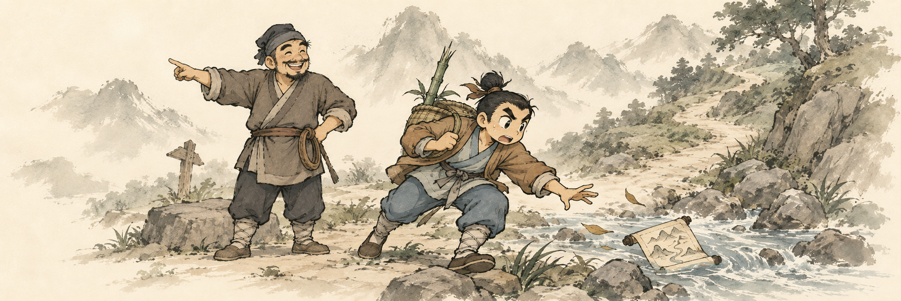
S00-02
获得卷轴
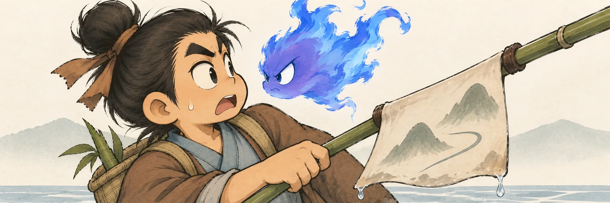
竹竿挑出一团火，主角脱口喊祖父，幽白当场炸毛。
132 KB · 点击查看大图
查看原图对照
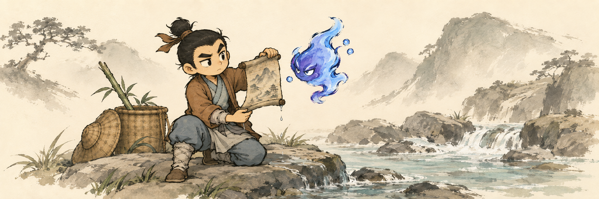
S00-03
越过山肩
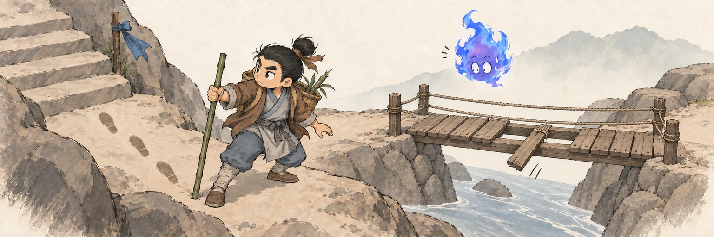
幽白的话没说完，桥板先给出了反对意见。
177 KB · 点击查看大图
查看原图对照
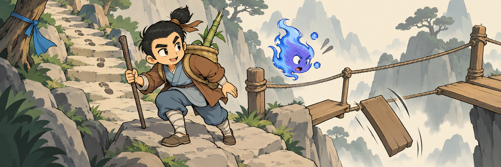
S00-04
初次战斗
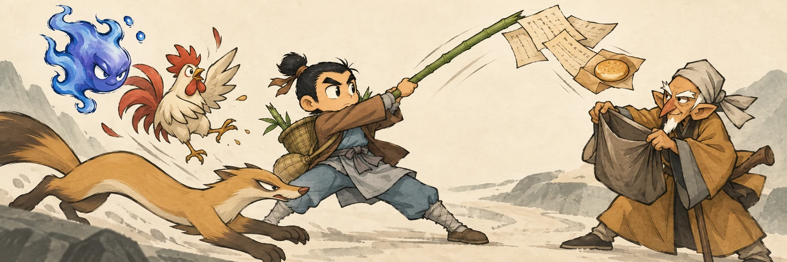
护的不是奇书秘宝，而是包过饼的半生手稿：挑纸、接稿、引兽三人同时动起来。
170 KB · 点击查看大图
查看原图对照
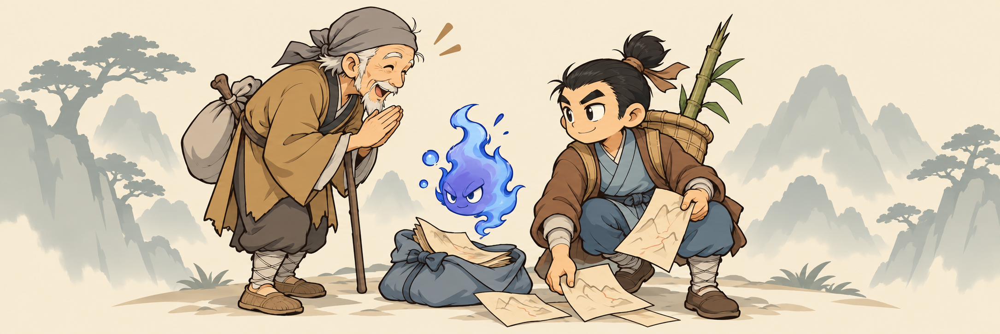
S00-05
国清寺
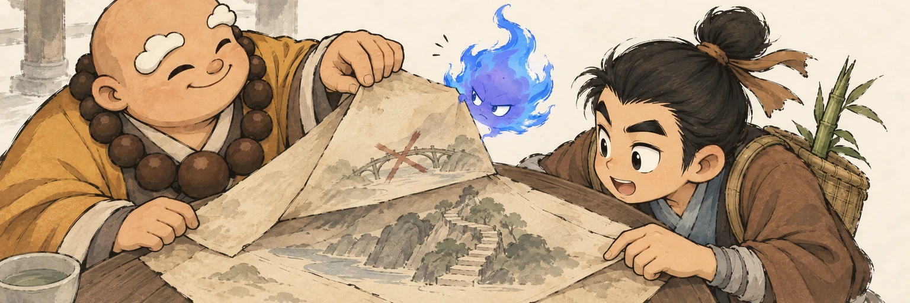
所谓正本没有神谕，只有一层层被认真改过的补丁。
189 KB · 点击查看大图
查看原图对照
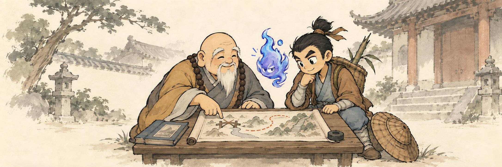
S00-06
获得天台山简图
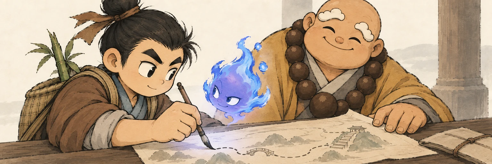
幽白第一次主动照着主角改错，争功的火变成了帮忙的光。
175 KB · 点击查看大图
查看原图对照
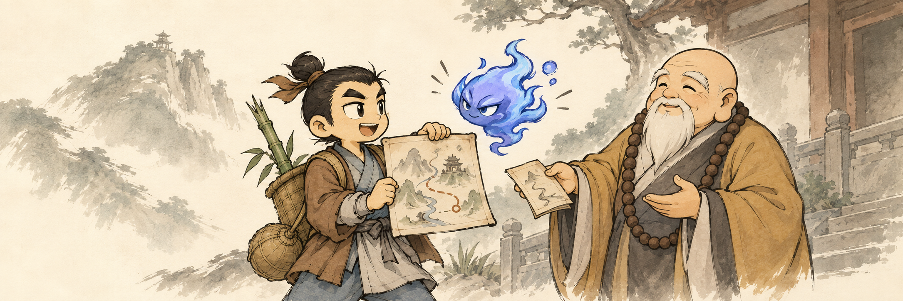
S00-07
客栈
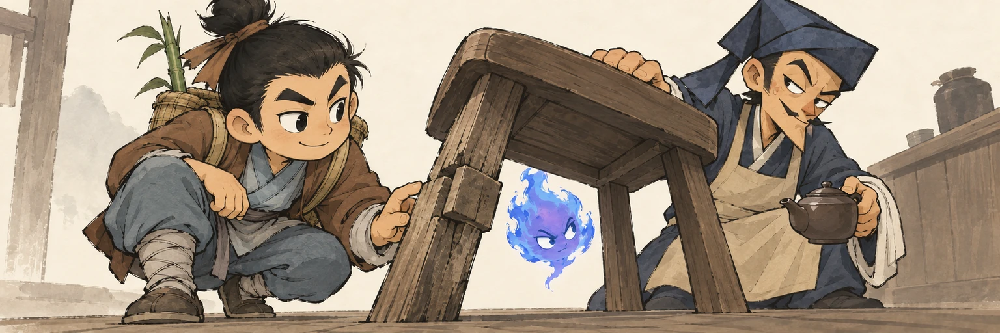
保真问路生意露了底：掌柜坐着的凳子，正是旧桥拆下来的料。
165 KB · 点击查看大图
查看原图对照
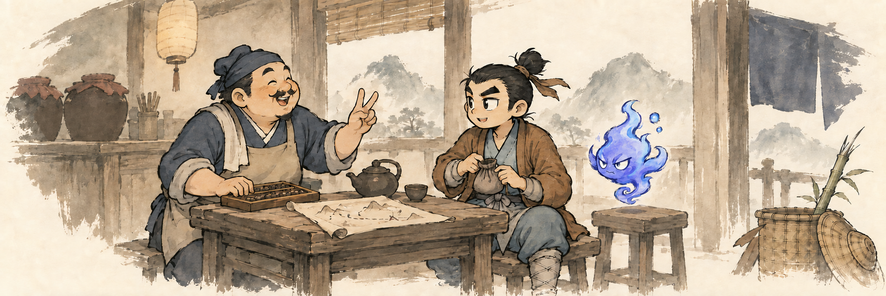
每张保留高分辨率母版；审阅WebP与游戏PNG均为1536×512。游戏使用BC7和既有篝火式边缘渐隐。